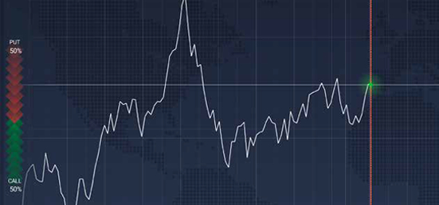
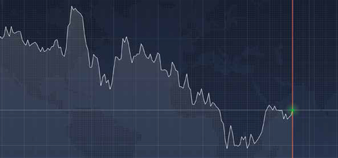
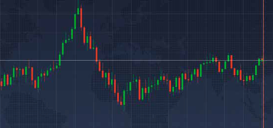
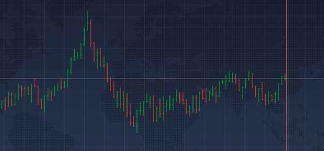
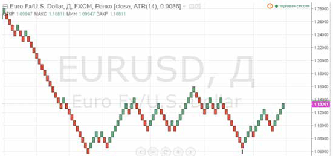

1. ОСНОВЫ ГРАФИЧЕСКОГО АНАЛИЗА
Поле деятельности трейдера – график рыночной цены. На основании анализа обозримой истории и текущего момента рыночной ситуации трейдер принимает решение о торговой манипуляции, несущей потенциальную при- быль. От того, насколько точно сделан прогноз, зависит будет ли сделка убыточной или прибыльной. Одним из самых популярных методов анализа рыночной ситуации среди трейдеров является графический анализ. Это, пожалуй, самый надежный, проверенный годами и десятилетиями метод.
В график цены уже включены все факторы, которые вклияют на рынок: экономические, фундаментальные, эмоциональные. Достаточно лишь анализировать график цены, чтобы прогнозировать изменения в будущем.
Существует несколько способов представления цены на графике. Все они показывают одну же информацию, но делают это поразному. В зависимости от потребно- стей трейдера, различные виды графиков могут использоваться для построения множества разных стратегий.
Линейный график
Линейный график показывает значение цены в каждый момент времени. Самый простой вид графиков выглядит как ломаная линия. Линейный график не предоставляет никакой дополнительной информации для анализа, на нем больше заметны рыночные шумы — незначительные колебания цены вокруг основной линии тренда.

Зонный график
Зонный график выглядит так же, как и линейный, единственное отличие — график делит торговое окно на две зоны — выше линии цены и ниже линии цены. Это не повышает информативность, но добавляет наглядности.

Свечной график
На свечном графике элементарной единицей является «свеча». В параметры каждой свечи входят четыре значения: цена открытия, цена закрытия, значение максимальной цены, значение минимальной цены. Направление движения выделяется цветом: зеленый (реже— белый) цвет означает рост цены, красный (реже —черный) – снижение цены.

Японские свечи – самый популярный вид графиков, хорошо подходит применения технического анализа. Японские свечи можно считать одним из инструментов анализа, так как они включают в себя определенный набор информации, которую можно использовать для торговли. Рисунок комбинации свечей (паттерн) может нести в себе настроение рынка. Когда внешние и внутренние показатели рынка при анализе свечей совпадают в выводах о дальнейшем развитии цены, то процент достоверности прогноза увеличивается
Бары
Бары очень похожи на свечи, но не являются более информативными по сравнению с ними. В каждом баре содержится информация, идентичная информации в одной свече. Но некоторым трейдерам удобнее использовать бары, потому что они занимают меньше места на торговой панели и являются более наглядным инструментом.

Ренко
График ренко (от японск. renga — кирпич) — график, который не учитывает время и объем торгов. Очередной «кирпич» рисуется только после того, как цена текущего периода увеличилась на размер предыдуего кирпича. Таким образом, за 1 день может появиться два кирпича, а за следующую неделю — ни одного. Все зависит от волатильности на рынке. По этому графику проще всего определять тренд. Мы остановимся на первых двух, потому что они считаются самыми удобными и универсальными инструментами анализа рыночной цены, и не без оснований.
